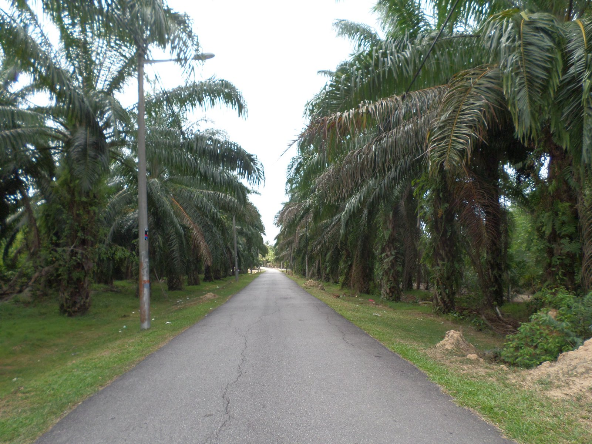

Sustainability
Traceability you can evidence, not adjectives.
Palm oil carries a real and well-documented environmental history. The useful response is not a statement of values — it is knowing which mill a parcel came from and being able to prove it to a regulator.
{kind=link}
Regulatory
Deforestation due diligence for EU-bound cargo.
The EU Deforestation Regulation places the compliance burden on the operator placing goods on the EU market — but that operator can only comply if origin supplies the data. For EU-destined parcels we work to provide what the due diligence statement requires.
- Geolocation
Plot-level coordinates
Geolocation data for the plots of production, collected through the mill, at the granularity the regulation requires.
- Chain
Traceability to mill
Parcel traced to the supplying mill, with the mill's own sourcing declaration behind it.
- Legality
Legal production evidence
Land title, operating licences and MSPO certification evidencing production under Malaysian law.
Note: EUDR obligations and their application dates have been amended more than once. Confirm the requirements applicable to your shipment with your own compliance function — we supply origin data, we do not give legal advice.
{kind=link}
Need certified supply or EUDR documentation?
Tell us the scheme, the supply chain model and the destination at enquiry stage, and we will tell you what origin can evidence.